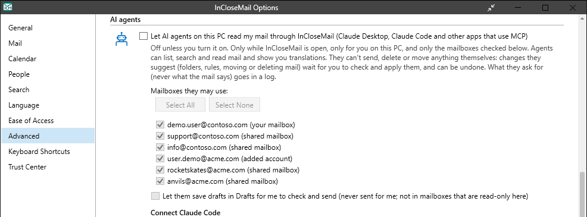
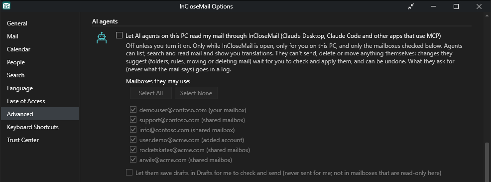

- Work with Claude and other AI agents: turn on AI agents in File → Options → Advanced and an AI app (Claude Desktop, Claude Code, or any MCP client) can list, search and read the mailboxes you choose, whole conversations and rules included, and save drafts for you to check. It can never send mail.




- Let an AI organize your mail, with your approval: ask the agent to tidy up and it proposes folders, rules and messages to move, mark as read or put in Deleted Items. InCloseMail shows each change with the agent’s reason; nothing changes until you click Apply, and Undo puts it all back. See AI agents in Help to set it up.
- Copy for AI and Export for AI: copy a message, a conversation or a whole folder as clean text to paste into any chatbot.
- Your choice, per mailbox: nothing is shared until you allow it, and organizations can turn it off with Group Policy.
Missing something you used in Outlook? Choose Help → Suggest a Feature in the app. Found a bug? Choose Help → Report a Bug.